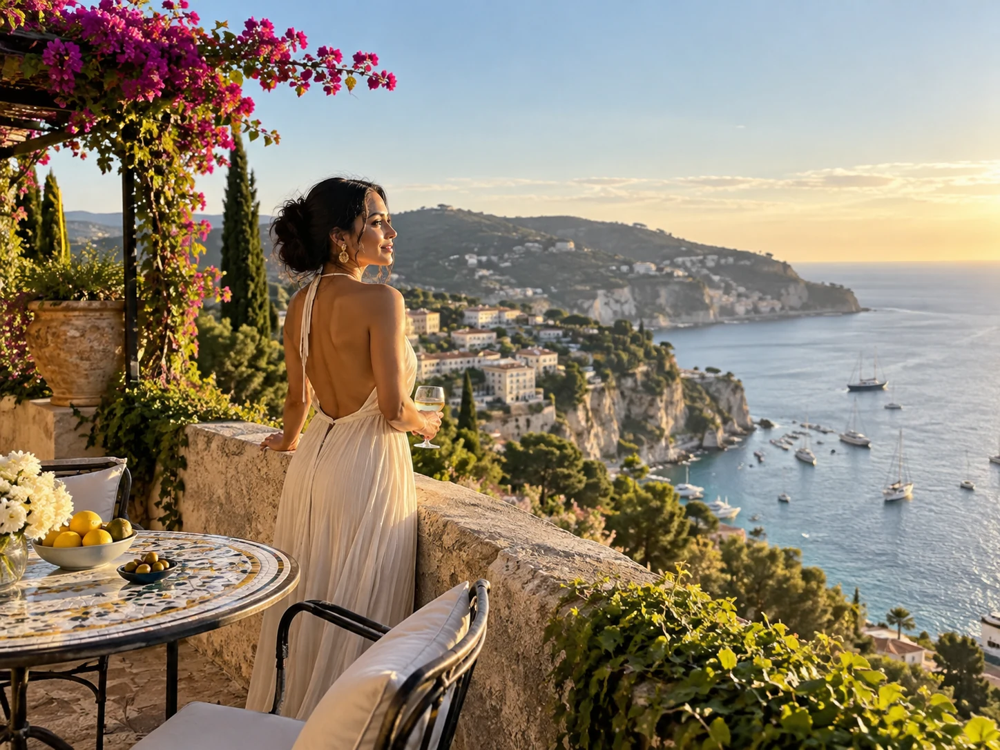

You are allowed to have a life that includes you
Being a mom does not cancel your need for rest, friendship, quiet, fun, or time with your partner. A trip without your kids is not a statement about how much you love them. It is simply time where you are not managing every part of family life.
For some moms, even two nights is enough to remember what it feels like to move through a day without being responsible for everyone else.
Guilt usually shows up before the trip
You may feel strange packing a bag while your kids stay home. That feeling does not automatically mean the trip is a bad idea. It often means you are used to putting your own plans behind everyone else.
It helps to make the care plan clear, leave the information people actually need, and then stop trying to control every detail from far away.

Choose a trip that actually gives you a break
If the goal is rest, do not build an itinerary that requires alarms, constant driving, and six reservations a day. Pick a destination that makes the experience easy, such as a good hotel, walkable restaurants, a spa, a beach, or one planned activity.
If what you need is fun with friends instead, then choose a place with energy. The point is to be honest about what you need from the time away.
Decide how available you want to be
Some parents like a morning and evening check in. Others want one call a day. Agree on what feels comfortable before you leave so you are not staring at your phone every twenty minutes.
If the kids are safe and cared for, you are allowed to be present where you are.
Coming home can feel different in a good way
Rest does not make the work of parenting disappear, but it can create a little more patience and perspective. You may also come home with a clearer idea of what kind of breaks you need more regularly.
A vacation without your kids does not have to be a once in a decade event. It can simply be one part of taking care of the person who is doing the parenting.